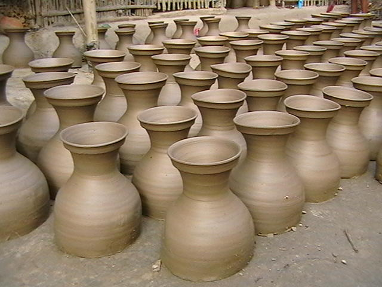

Pottery production in ancient Akrotiri
Excavations at the site of prehistoric Akrotiri, on the coast of the Aegean Sea, have revealed much about the technical aspects of pottery manufacture, indisputably one of the basic industries of this Greek city. However, considerably less is known about the socio-economic context and the way production was organised.
The bulk of pottery found at Akrotiri is locally made, and dates from the late fifteenth century BC. It clearly fulfilled a vast range of the settlement’s requirements: more than fifty different types of pots can be distinguished. The pottery found includes a wide variety of functional types like storage jars, smaller containers, pouring vessels, cooking pots, drinking vessels and so on, which all relate to specific activities and which would have been made and distributed with those activities in mind. Given the large number of shapes produced and the relatively high degree of standardisation, it has generally been assumed that most, if not all, of Akrotiri pottery was produced by specialised craftsmen in a nondomestic context. Unfortunately neither the potters’ workshops nor kilns have been found within the excavated area. The reason may be that the ceramic workshops were located on the periphery of the site, which has not yet been excavated. In any event, the ubiquity of the pottery, and the consistent repetition of the same types in different sizes, suggests production on an industrial scale.
The Akrotirian potters seem to have responded to pressures beyond their households, namely to the increasing complexity of regional distribution and exchange systems. We can imagine them as fulltime craftsmen working permanently in a high production-rate craft such as pottery manufacture, and supporting themselves entirely from the proceeds of their craft. In view of the above, one can begin to speak in terms of mass-produced pottery and the existence of organised workshops of craftsmen during the period 1550-1500 BC. Yet, how pottery production was organised at Akrotiri remains an open question, as there is no real documentary evidence. Our entire knowledge comes from the ceramic material itself, and the tentative conclusions which can be drawn from it.
The invention of units of quantity and of a numerical system to count them was of capital importance for an exchange-geared society such as that of Akrotiri. In spite of the absence of any written records, the archaeological evidence reveals that concepts of measurements, both of weight and number, had been formulated. Standard measures may already have been in operation, such as those evidenced by a graduated series of lead weights - made in disc form - found at the site. The existence of units of capacity in Late Bronze Age times is also evidenced by the notation of units of a liquid measure for wine on excavated containers.
It must be recognised that the function of pottery vessels plays a very important role in determining their characteristics. The intended function affects the choice of clay, the production technique, and the shape and the size of the pots. For example, large storage jars (pithoi) would be needed to store commodities, whereas smaller containers would be used for transport. In fact, the length of a man’s arm limits the size of a smaller pot to a capacity of about twenty litres; that is also the maximum a man can comfortably carry.
The various sizes of container would thus represent standard quantities of a commodity, which is a fundamental element in the function of exchange. Akrotirian merchants handling a commodity such as wine would have been able to determine easily the amount of wine they were transporting from the number of containers they carried in their ships, since the capacity of each container was known to be 14-18 litres. (We could draw a parallel here with the current practice in Greece of selling oil in 17 kilogram tins)
We may therefore assume that the shape, capacity, and, sometimes decoration of vessels are indicative of the commodity contained by them. Since individual transactions would normally involve different quantities of a given commodity, a range of ‘standardised’ types of vessel would be needed to meet traders’ requirements.
In trying to reconstruct systems of capacity by measuring the volume of excavated pottery, a rather generous range of tolerances must be allowed. It seems possible that the potters of that time had specific sizes of vessel in mind, and tried to reproduce them using a specific type and amount of clay. However, it would be quite difficult for them to achieve the exact size required every time, without any mechanical means of regulating symmetry and wall thickness, and some potters would be more skilled than others. In addition, variations in the repetition of types and size may also occur because of unforeseen circumstances during the throwing process. For instance, instead of destroying the entire pot if the clay in the rim contained a piece of grit, a potter might produce a smaller pot by simply cutting off the rim. Even where there is no noticeable external difference between pots meant to contain the same quantity of a commodity, differences in their capacity can actually reach one or two litres. In one case the deviation from the required size appears to be as much as 10-20 percent.
The establishment of regular trade routes within the Aegean led to increased movement of goods; consequently a regular exchange of local, luxury and surplus goods, including metals, would have become feasible as a result of the advances in transport technology. The increased demand for standardised exchanges, inextricably linked to commercial transactions, might have been one of the main factors which led to the standardisation of pottery production. Thus, the whole network of ceramic production and exchange would have depended on specific regional economic conditions, and would reflect the socio-economic structure of prehistoric Akrotiri.
Questions 1-2
Choose the correct letter, A, B, C or D.
1 What does the writer say about items of pottery excavated at Akrotiri?
A There was very little duplication.
B They would have met a big variety of needs.
C Most of them had been imported from other places.
D The intended purpose of each piece was unclear.
2 The assumption that pottery from Akrotiri was produced by specialists is partly based on
A the discovery of kilns.
B the central location of workshops.
C the sophistication of decorative patterns.
D the wide range of shapes represented.
Questions 3-6
Complete each sentence with the correct ending, A-F, below.
Write the correct letter, A-F.
3 The assumption that standard units of weight were in use could be based on
4 Evidence of the use of standard units of volume is provided by
5 The size of certain types of containers would have been restricted by
6 Attempts to identify the intended capacity of containers are complicated by
A the discovery of a collection of metal discs.
B the size and type of the sailing ships in use.
C variations in the exact shape and thickness of similar containers.
D the physical characteristics of workmen.
E marks found on wine containers.
F the variety of commodities for which they would have been used.
Questions 7-12
Do the following statements agree with the views of the writer in Reading Passage 3? Write
YES if the statement agrees with the claims of the writer
NO if the statement contradicts the claims of the writer
NOT GIVEN if it is impossible to say what the writer thinks about this
7 There are plans to excavate new areas of the archaeological site in the near future.
8 Some of the evidence concerning pottery production in ancient Akrotiri comes from written records.
9 Pots for transporting liquids would have held no more than about 20 litres.
10 It would have been hard for merchants to calculate how much wine was on their ships.
11 The capacity of containers intended to hold the same amounts differed by up to 20 percent.
12 Regular trading of goods around the Aegean would have led to the general standardisation of quantities.
Questions 13-14
Choose the correct letter, A, B, C or D.
13 What does the writer say about the standardisation of container sizes?
A Containers which looked the same from the outside often varied in capacity.
B The instruments used to control container size were unreliable.
C The unsystematic use of different types of clay resulted in size variations.
D Potters usually discarded containers which were of a non-standard size.
14 What is probably the main purpose of Reading Passage 3?
A To evaluate the quality of pottery containers found in prehistoric Akrotiri.
B To suggest how features of pottery production at Akrotiri reflected other developments in the region.
C To outline the development of pottery-making skills in ancient Greece.
D To describe methods for storing and transporting household goods in prehistoric societies.
---End of the Test---
Please Submit to view your score, solution and explanations.